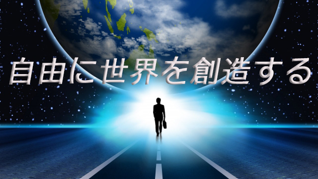

勉強でもスポーツでも仕事でも、自分の力を十分発揮してスイスイ事を進めていく人とそうでない人がいるが、その違いは一体どこから生じるものなのか。
よく脳科学者などが人間はもっている能力の98％は眠ったままであり、普段発揮するのは全能力の2～3％に過ぎないと言うが、数値はさておき私の経験でも本来もっている力を完全に解放できる人はめったにいないと実感している。
試験に臨む生徒、試合に臨むスポーツ選手、大事な商談や契約を取りつけようとする営業マン、新規に事業を開拓する経営者でさえ、皆それなりに努力もし工夫もして、失敗しないよう準備していながら事がうまく運ぶ人は少ない。
一方、同じような状況にありながら困難を次々クリア―して傍目には楽に物事をうまく運んでいく人もいる。
どこに違いはあるのか？うまく行く人は努力がスゴいのか？超人的な能力に最初から恵まれているだけなのか。
答えを言うなら努力の差でも能力の差でもない。それは微々たる差でしかない。「心がまえ」の差である。
心がまえと聞いて「何だそんなこと？」と思うならその人は何も分かっていない。心がまえとは自分が世界（物事）とどう向き合うかその姿勢のことであり、何も決まっていない無限の空間、何も見えない暗闇に飛び込む勇気をもっているかどうか、その覚悟の有無のことだ。
勇気、覚悟というと何かとてつもない力を発揮するように聞こえるがそうでもない。私的には自由の感覚に近い。
結果主義が失敗の原因
多くの人は結果主義の世界に生きている。結果主義の世界観に生きるほど失敗を恐れるようになり、失敗を恐れるほど行動のエネルギーは縮こまりむしろ失敗のリスクは高まる。つまり「結果」にこだわるほど皮肉なことに望みの結果は遠のくということだ。
そうなるとますます慎重に計画を練ったりリスクを減らそうと算段するわけで、それは頭で考えることになり、いくら脳ミソをふりしぼったところで先の2～3％の限界内でしかない。
制限だらけの人間の小さな脳でいくら考えたところで予測は難しい。必ず想定外のことが起こるからだ。私たちは5分後のことさえ予測できないし明日何が起こるかも分からない。
そして物事は常に流動している。どんな小さな出来事であっても単独で存在するものはなく、必ず様々な物事が複雑に絡み合っていま眼の前にある。単純な因果関係でとらえようとしてもそれはうまくいかない。「Aすれば必ずBになる」というように一対一で対応しているわけではないからだ。
なので闇に飛び込む勇気が必要となる。
それは無謀になれということではない。努力や辛い練習が要らないということでもない。そう思ってしまうならまだ「制限」の中にいる。つまり結果主義の世界に生きている。
順調な人、物事がうまくいく人、いわゆる成功する人は「結果」を求めながらも、方法やルールという常識（制限）にとらわれず自分なりの枠（ルール）を創造し、そのプロセスを楽しめる人だ。「失敗したらどうしよう」「うまくいかないと人にどう見られるか」という恐怖心を逆に己の力に変えて果敢に前進する。
自分なりのルールで世界を創造する
実は、物事を順調に進める人たちも人生の初めには結構挫折や失敗を経験している。彼らにとってむしろ挫折や失敗は必須だった。しかしこれは挫折や失敗をすれば成功するという意味ではない。挫折、失敗が何の糧にもなっていない人も多いからだ。では彼ら（成功者）は挫折から何をつかんだのだろう。
それは常識（ルール）は当てにならないということだ。私たちは失敗を恐れて正しい方法を探そうとする。物事に正解を求めてしまう。だが彼ら（成功者）はその姿勢こそが失敗の元だと知ったのだ。つまり「万人に当てはまる正解などないのだ」というのが正解ということに気づいた。
そう気づいてしまえば後は勝手に自分なりのルールを作ってそれに従えば良い。それはある意味とても楽しい道のりだ。
どんなに他人から見て「必死の努力」に見えたとしても本人は楽しんでやっている。ノーベル賞級の業績を上げる研究者も終日研究室に閉じこもって、その仕事で遊んでいたし、大きなプロジェクトを成し遂げた人たちもその過程で起こる様々な発見や奇跡を楽しんでいた。成果を上げ続けるスポーツ選手もそう。
彼らは自分が独自の道を歩んでいることを知っている。自分が道を作っている以上自分は常に先頭にいる。そうして無限の空間を自ら切りひらいていく自由を感じている。人の後に続くのではなく、つまり正解の道をたどるのは止めて何もない広大な空間（可能性）を突き進む。勇気と希望だけを携えて。そこには自分を信じ世界を信じる者だけが放つ清々しさがある。
ハートを開いて無防備となり世界と向き合う。世界はその姿勢に必ず応えてくれる。振り返れば自分の歩んだ道には花が咲き、川は流れ街ができ人々の幸福があったと気づく。つまり世界を創ったのだ。
求める「結果」は文字通り結果として己の歩んだ後にできるということ。これが彼らの見ている風景なのだ。
要は独自のルールで自由に世界を創り出すこと。その心がまえをもって事に当たれば、人生は順調に回り出すということになる。